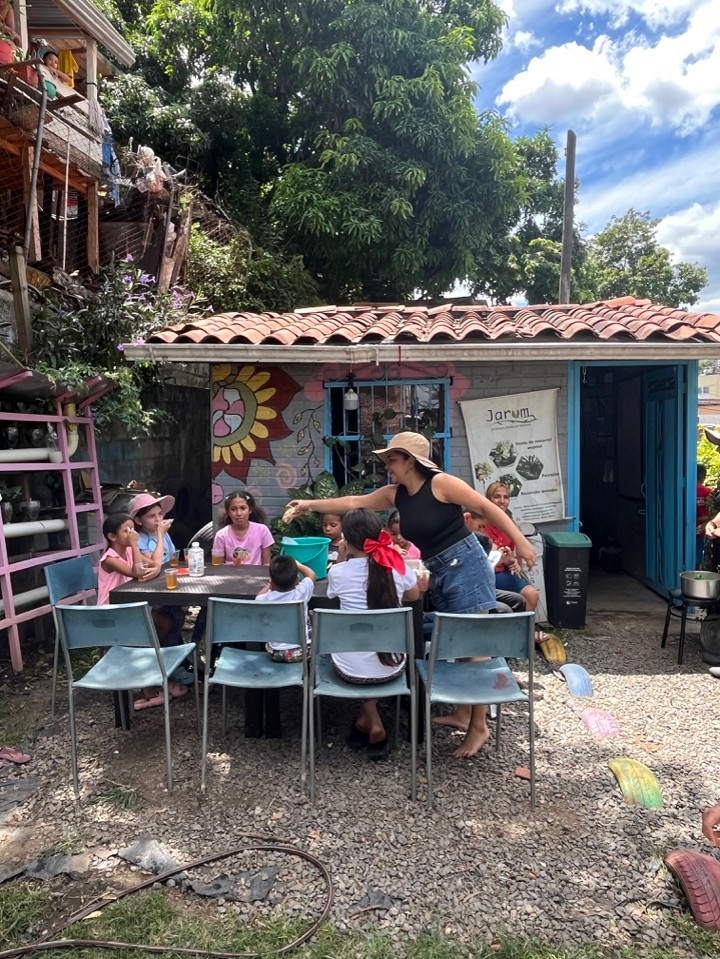
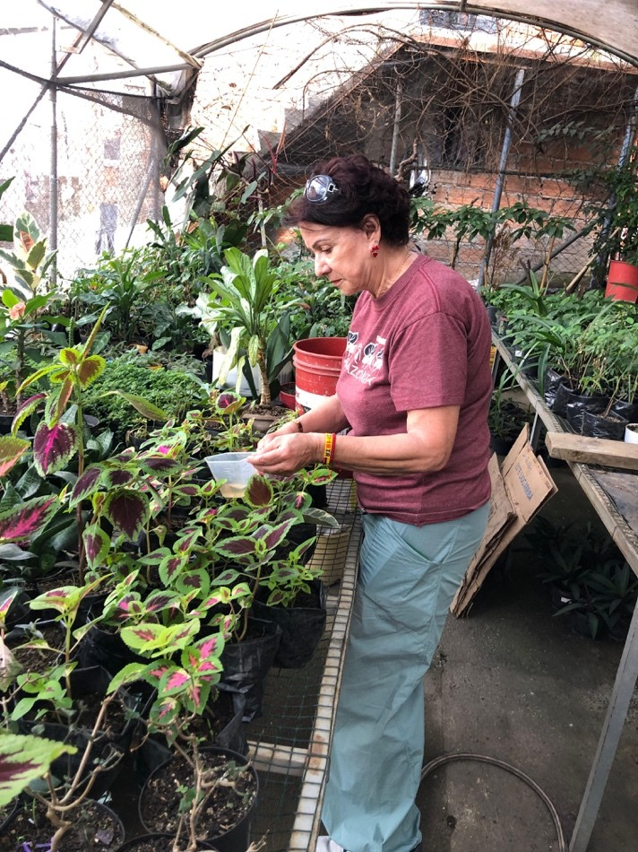
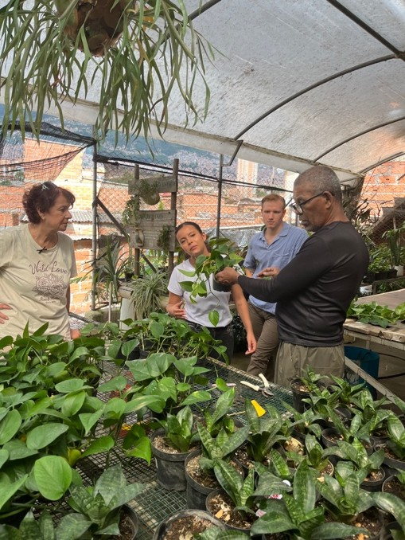
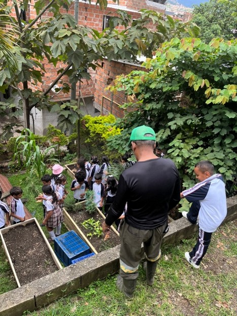
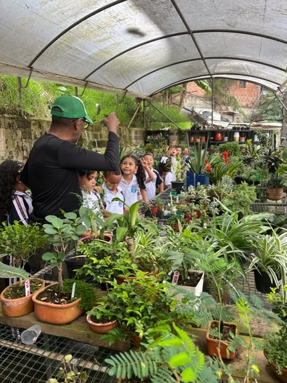

Sancocho comunitario después de jornada de reciclaje
El trabajo ambiental en Moravia siempre es colectivo. Alrededor del fogón comunitario se celebran las jornadas de limpieza y se fortalecen los lazos vecinales.
Este espacio profundiza en las acciones cotidianas de JARUM: la germinación de plantas nativas, la pedagogía con niños y jóvenes, y el cuidado incansable de los senderos que transformaron el antiguo relleno en memoria viva.
La vegetación en Moravia no es solo ornamento: es tecnología viva de fitorremediación que absorbe metales, estabiliza pendientes y devuelve la dignidad al barrio.
Haz clic en cada estación para descubrir cómo se gestó la recuperación ambiental:
La administración municipal oficializa el Morro como vertedero oficial de Medellín. Familias desplazadas por el conflicto se asentaron en los bordes, encontrando en el reciclaje su sustento de vida.
Plantas seleccionadas por los jardineros para absorber contaminantes y retener laderas:
Almacenan agua en tejidos gruesos y prosperan en terrenos con escasez de nutrientes, creando alfombras protectoras contra la erosión superficial.
Arbustos densos de raíz pivotante empleados para delimitar senderos peatonales, capturar partículas de polvo y amortiguar pendientes pronunciadas.
Especies de rápido rebrote subterráneo con capacidad de retener elementos pesados presentes en las capas profundas del antiguo relleno.
Follaje amplio que retiene la humedad del rocío mañanero y genera microclimas propicios para la proliferación de insectos polinizadores.

El trabajo ambiental en Moravia siempre es colectivo. Alrededor del fogón comunitario se celebran las jornadas de limpieza y se fortalecen los lazos vecinales.

Jarum tiene la meta de reforestar Antioquia con plantas nativas de la ciudad, multiplicando en su vivero esquejes y semillas aclimatadas al entorno urbano.
Don William Gómez ve a Jarum como una segunda oportunidad para que las zonas verdes de Moravia puedan crecer junto a su gente.



Alejandra Fabra inició su camino realizando sus prácticas universitarias en Moravia, continuó como voluntaria y hoy lidera la dirección de la corporación. Su testimonio refleja el reto de construir sostenibilidad económica a través de la educación ambiental, el paisajismo y la creación de empleo digno para el territorio.
"Los socios fundadores y los nuevos socios hemos creado lazos que hacen que todo esto tenga sentido."
— Alejandra Fabra, Directora de JARUMSenderos, memoria viva y trabajo de campo en el Morro de Moravia.
Comunícate con nuestro equipo para alianzas institucionales, recorridos ecoturísticos o adquisición de material vegetal.